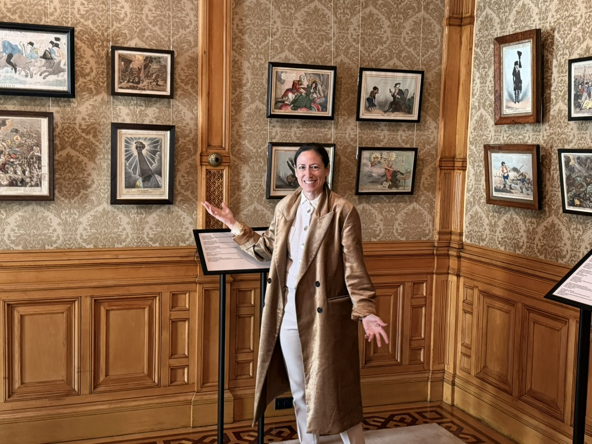
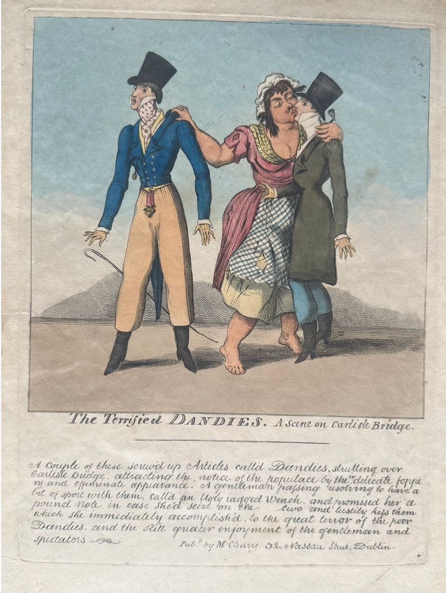
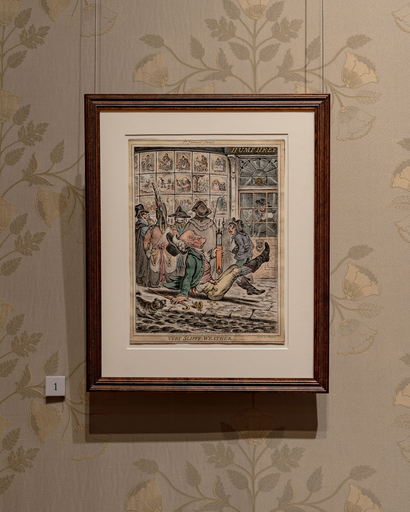
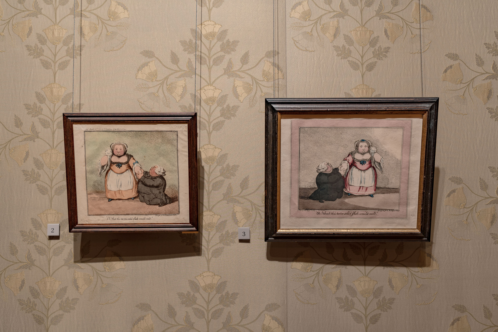
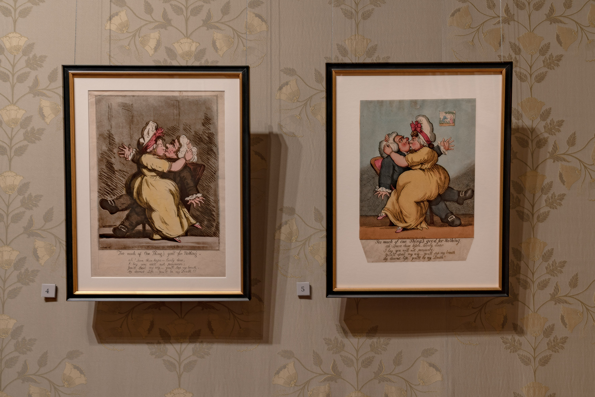
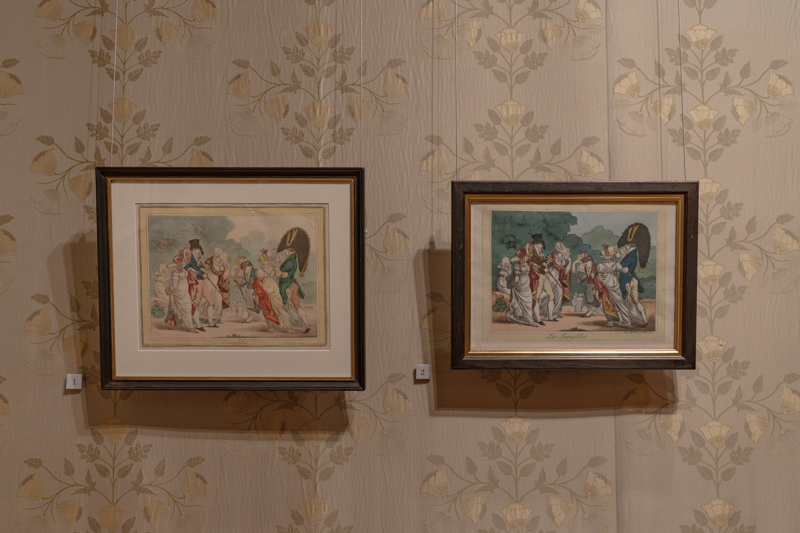
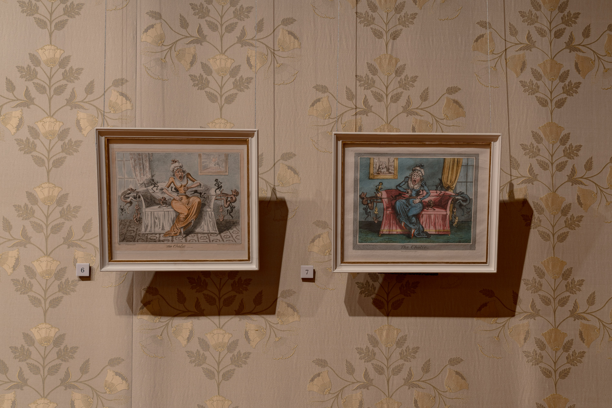

Silvia Beltrametti is an intellectual property lawyer and a lecturer at the School of the Art Institute of Chicago. An expert on art law, her research on how copyright shapes artistic production includes an in-depth catalogue titled Artists and Pirates that accompanies this exhibition.
CCM: Silvia, tell us a little about yourself…
“I’m Silvia Beltrametti and I am truly grateful for the opportunity to give this interview about my exhibition Ink and Outrage at the Driehaus Museum. It closes in just 7 days and I hope that you can make time to visit. When I gave my opening remarks on the stage of the Murphy Auditorium on May 14th in front of 400 people I could not foresee how enriching and transformative this experience would become for me: the active engagement of local communities helped shape the meaning of this exhibition in a powerful way. That’s what I would like to focus on today. How the audience of Chicago brought so much incredible new content to it, proving that laughter truly is the shortest distance between two people.”

CCM: How did you decide to curate and write about satirical cartoons?
“I am an Intellectual Property lawyer and I stumbled into this topic when I detected a legal loophole: satirical prints produced in eighteen century London were the subject of the world’s first copyright law protecting illustrators — but since there was no such legislation in Ireland, Dublin publishers profited from such a loophole by appropriating the original content and turning it into their own. As I started digging into this story, so many questions that have extreme contemporary relevance popped up, such as: what did originality mean then compared to today? How did the circulation of these prints enable new creative contexts? Is copyright still relevant in the age of AI? The exhibition tackles these questions, but here is another angle that I uncovered by interacting with the Driehaus audience. That then, as well as now, irony is power, and that satire is an intellectual vehicle that can deliver truth in the most piercing, direct way possible. It is a powerful tool of freedom of expression.”
CCM: What was the importance of them at the time and what do collectors value most?
“Collectors value rarity, the quality of the impression, distinctive coloring, and of course attribution. Attribution in this context means the signature of the artist as well as sourcing indications such as the name and address of the publisher on the margins of the print. With the passing of the Hogarth Act in England in 1735, engravers were upgraded from being labourers working for publishers to proper artists, who could own as license their creative output. Signing off on a print became a big deal. The same did not apply in Dublin, where the lack of copyright meant that only the publisher’s details were included on the print. This means that the names of Irish artists will likely remain lost to history forever. By comparing some of the London originals and their Dublin copies side-by-side the viewer can make out which one is better, and cheer for the unknown maker.. !”
CCM: The exhibition premiered in Dublin, has the reaction been somewhat similar in both places?
“In Dublin, the exhibition was well received, people were more familiar with this kind of material and the historical moment, but in many ways the way the audience reacted to it in Chicago instigated responses that were unexpected and thought-provoking. To ease the viewer into this material we put together a timeline titled “The World of Ink and Outrage”, contextualizing the artwork within historical events such as the French Revolution, the Declaration of Independence, the incorporation of Chicago, as well as important scientific, literary and artistic achievements. It features Benjamin Franklin, Jane Austen, Mozart. Everyone can find an anchor in this timeline, don’t miss it when you visit.”

CCM: The Driehaus Museum plays such a significant role in Chicago. What role does your exhibition have in its impact this year?
“The outreach that the Driehaus was able to achieve to promote Ink and Outrage was extraordinary. Executive Director Lisa Key and her team have been fantastic partners and through their effort the exhibition reached the most diverse audiences. I gave tours to boards of commercial companies, lawyers, bibliophiles, children, educators and members of art institutions from all around town, as well as members of the North Shore Civic Club and broadcasters of Chicago’s Irish Radio Show. Musical concerts connected the content of the prints to classical pieces composed at that time, another program brought contemporary satirists from the Onion and the New Yorker together to talk about how the practice of eighteenth-century satirists influenced their work. The very first cover of the New Yorker features a Dandy, which is strikingly similar to the eccentric beaus pictured in the exhibition.”
CCM: Curating an exhibition in a Gilded Age mansion must have had particular meaning. How did you choose to fill the rooms with the prints?
“Absolutely. The prints look spectacular in the Victorian style rooms on the second floor of the Driehaus Museum, they find their full relevance in that context. The rail hanging allows for double and sometimes triple hangs, a technique that makes the artworks pop out more. Another distinctive feature is that the collection of the Driehaus Museum includes eighteenth century furniture that we exhibited alongside the prints. The decorative pieces from the same time and place complemented the narrative by grounding their meaning. For instance, we placed a card table inside a beautiful Oriel Window, and only when I gave my first tour did I notice that the same room features a print picturing a small group of women playing cards on a similar table. And this is exactly the type of table around which these prints would have been looked at, commented, laughed at. In the eighteenth century they were not hanging on the walls, but folded into albums and circulated during tea time, or after dinner while sipping port.”

CCM: What is it about the 18th Century and satire in general that most appeal to you?
“As I embarked into this journey I was unaware about the role of women in this history. The named protagonist of the exhibition is James Gillray, who trained at the Royal Academy of London shortly after it was founded, and was destined to become a society portrait painter — but instead he chose print as his medium and satire as his subject. His closest ally was his gallerist, an entrepreneurial woman called Hannah Humphrey. She was the mastermind behind his creative spirit and put his wit to use in every possible way. The skilled business women nurtured audiences and ensured that Gillray kept delivering entertaining content to them. Importantly, she cultivated a specifically female readership. Women were becoming literate at a faster speed than ever in history, from less than 15% in the beginning of the eighteenth century, by the early 1800s more than half of the female population could read and write — and these women were curious about the customs, fashions, manners and mores of the celebrities of their time. I like to think that a group of them met around the card table to look at prints and converse. A bit like we consume and share content with friends when passing our phone around during social gatherings.”
CCM: When a curator is given many pieces from a variety of locations, how do you work to tell the story?
“I was so lucky when I found two major collectors of this material in Chicago. The O’Brien family was supportive right away and borrowed some key pieces, including the sequel Harmony before Matrimony and Matrimonial Harmonics (pictured below alongside the Irish copy of the latter). Then a friend and collector who lives in London who also loaned to the exhibition introduced me to Bill Gordon from Glencoe and thanks to his generosity we were able to showcase some truly exceptional material, including the wrapper the Caricature Magazine — the precursor of the comic — which delivered two original caricatures to subscribers every fortnight, and an original copper plate which is instrumental in conveying the skill required to make such works. The exhibition includes a video of the Chicago Printmakers Collaborative replicating the technique.”


CCM: What have you heard visitors remarking about the show and what would you like people who haven’t visited to enjoy for sure at the exhibition?
“Find your own angle. Printmaking, eighteenth century tales, fashion, interiors, politics, world history, you name it. It’s there.”
CCM: Are you working now on another project?
“Yes, I am! I am working on a book titled Intellectual Property and Gender Bias in the Arts. It’s about women who throughout history were not able to take advantage of copyright protection and what that meant for their life and legacy. One of the stories is about Elizabeth Blackwell, a botanical illustrator based in London whose innovative and brilliant illustrations were widely copied by publishers who ignored her rights. She sued, first through her husband, because women lacked standing, but eventually she won on all fronts: women were creators in front of the law and she was able to stop the appropriators. Stay tuned.”
More from the Exhibition





Together with her husband Jay Krehbiel, Silvia oversees Ballyfin, an Irish Regency-era historic house that regained its splendor after an ambitious decade-long restoration. In 2023 Ballyfin was awarded the prestigious Hadrian Award by the World Monuments Fund.